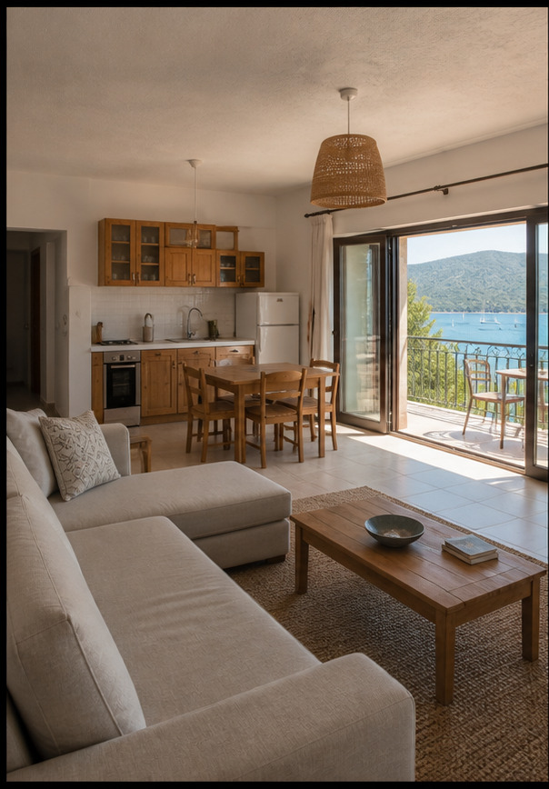
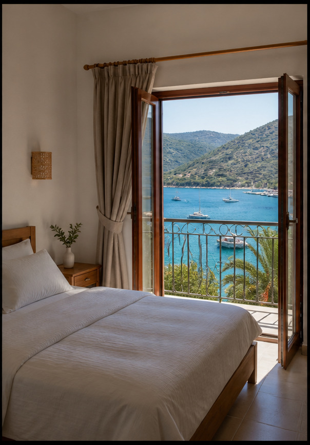
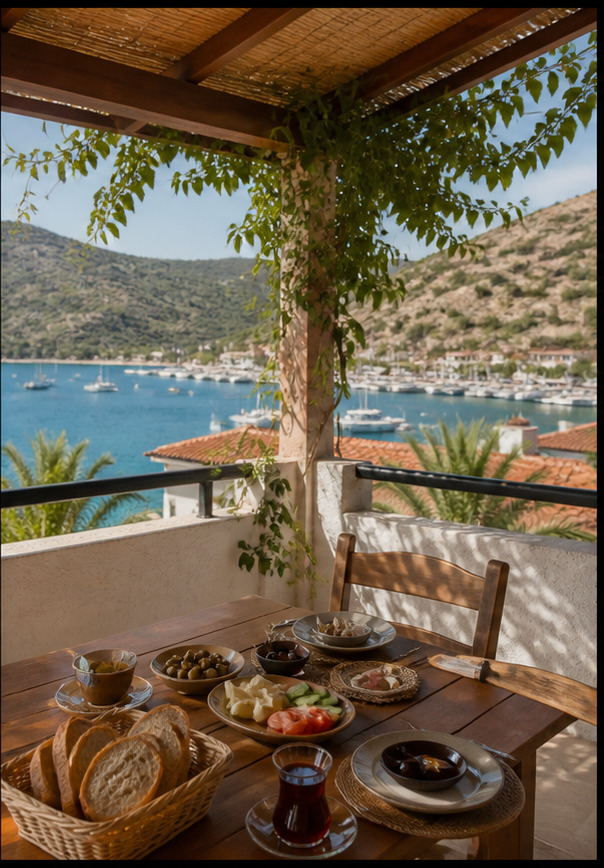

Bozburun Mahallesi Adatepe Caddesi No:23, 48700 Marmaris / MuğlaKoyun merkezinde özgür konaklama
Evinizi yanınıza alın,
Bozburun’a yerleşin.
Yağız Apart’ta tam mutfak, balkon ve bağımsız giriş; iki ila dört yetişkin için kendi düzeninizi kurar.
Adatepe Mutfaklı Apart Suite’ı gör ↓MUTFAKLI APART · 2–4 YETİŞKİN
Kendi evin gibi
Bozburun’da.
Bağımsız giriş, tam mutfak, buzdolabı, doğa/deniz manzarası ve klima; Yağız Apart uzun kalışta ev rahatlığını korur.

Adatepe Mutfaklı Apart Suite50 m² apart · 12 m² balkon
Adatepe Mutfaklı Apart Suite
50 m² + 12 m² balkon; tam mutfak, buzdolabı, bağımsız giriş ve 2–4 yetişkinlik aile konaklamasına uygun yaşam alanı.
- 01 50 m² mutfaklı apart
- 02 12 m² balkon ve bağımsız giriş
- 03 2–4 yetişkinlik aile düzeni

ADATEPE CADDESİ · BOZBURUNYAĞIZ APART’TA BİR GÜN
Pazardan mutfağa,
evden koya.
MUTFAKLI APART · 2–4 YETİŞKİN
Kendi evin gibi,
Bozburun’da.
Bağımsız giriş, tam mutfak ve balkon; Yağız Apart uzun kalışta ev rahatlığını korur.
YAĞIZ APART’TA BİR GÜN
Kendi mutfağından kıyıya
Pazar alışverişlerini kendi mutfağınızda değerlendirin; Bozburun merkezine yürüyerek yaklaşık 500 metrede kendi saatinizde yaşayın.
İLETİŞİM & KONUM
Yağız Apart Otel
MUTFAKLI APART · 2–4 YETİŞKİN · BOZBURUNBağımsız giriş, tam mutfak ve balkon; Yağız Apart uzun kalışta ev rahatlığını korur.
Müstakil otopark, bağımsız apart girişi, merkeze 500m